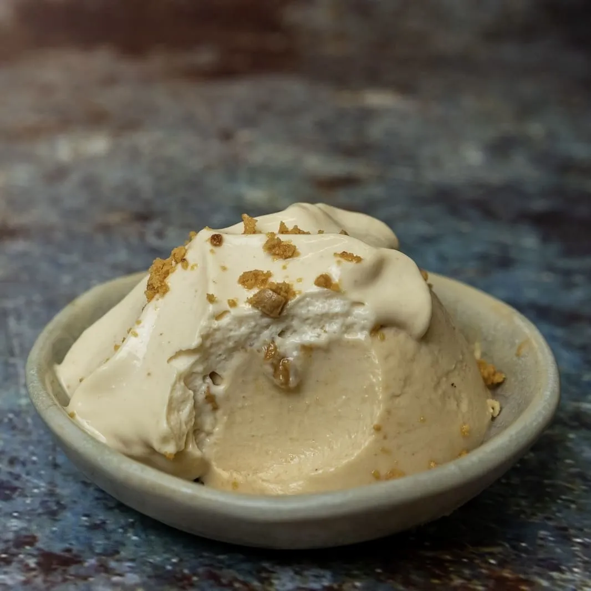

⏲ 20 minuts 👥 6 racions

Arranquem l’any amb un dolç per aprofitar els torrons que ens hagin pogut sobrar d’aquestes festes
nadalenques. Es tracta de dues elaboracions amb Xixona que proposa l’especial de Nadal de la revista
@cuinacat .
Ingredients:
- 3 fulls de gelatina
- 400ml de nata 35% MG
- 40g de sucre
- 120g de torró de Xixona
- 50ml de llet
- Per a l'escuma de torró: 3,5 fulls de gelatina, 360 g de llet, 40 g de sucre, 100 g de torró de Xixona, 260 g de nata 35% MG.
- Per a la pannacotta, triturem el torró de Xixona amb la llet. En un cassó, fem bullir la nata 35% MG amb el sucre, i hi integrem la mescla triturada. Afegim la gelatina prèviament hidratada 30 minuts, ben escorreguda.
- Triturem novament tant com puguem, preferiblement amb un robot de cuina. Posem la mescla en flameres i ho portem a la nevera, on deixem quallar un mínim de 12 hores.
- Per a l’escuma de torró, en un cassó arrenquem el bull del torró de Xixona, el sucre, la llet i la nata 35% MG. Integrem la gelatina prèviament hidratada, ben escorreguda. Triturem tan finament com puguem i colem.
- Posem la barreja al sifó, sense superar el límit de seguretat, i deixem 4 hores a la nevera.
- Emplatem la pannacotta desemmotllant de la flamera, si cal, ajudats d’aigua tèbia al voltant del motlle. Carreguem el sifó amb la càrrega necessària (potser caldran alguns minuts extra de nevera) i coronem amb l’escuma de torró i trossets de torró de Xixona.